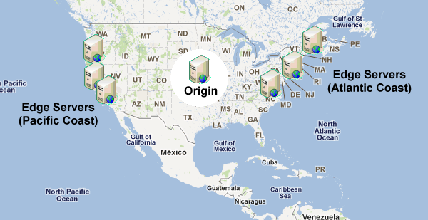

How content delivery networks (CDNs) work
Content delivery networks (CDNs) are an important part of Internet infrastructure that are frequently used without a full understanding of what’s happening behind the scenes. You’ll hear people saying, “oh, we put that on the CDN” or “make sure static assets go on the CDN,” when they have only a rudimentary idea of what CDNs are and how they work. As with most pieces of technology, CDNs are not magic and actually work in a pretty simple and straightforward manner.
When a web browser makes a request for a resource, the first step is to make a DNS request. Making a DNS request is a lot like looking up a phone number in a phone book: the browser gives the domain name and expects to receive an IP address back. With the IP address, the browser can then contact the web server directly for subsequent requests (there are actually multiple layers of DNS caching, but that’s beyond the scope of this post). For your simple blog or small commercial web site, a domain name may have a single IP address; for large web applications, a single domain name may have multiple IP addresses.
Physics determines how fast one computer can contact another over physical connections, and so attempting to access a server in China from a computer in the United States will take longer than trying to access a U.S. server from within the U.S. To improve user experience and lower transmission costs, large companies set up servers with copies of data in strategic geographic locations around the world. This is called a CDN, and these servers are called edge servers, as they are closest on the company’s network to the end-user.
DNS resolution
When the browser makes a DNS request for a domain name that is handled by a CDN, there is a slightly different process than with small, one-IP sites. The server handling DNS requests for the domain name looks at the incoming request to determine the best set of servers to handle it. At it’s simplest, the DNS server does a geographic lookup based on the DNS resolver’s IP address and then returns an IP address for an edge server that is physically closest to that area. So if I’m making a request and the DNS resolver I’m routed to is Virginia, I’ll be given an IP address for a server on the East coast; if I make the same request through a DNS resolver in California, I’ll be given an IP address for a server on the West coast. You may not end up with a DNS resolver in the same geographic location from where you’re making the request.

That’s the first step of the process: getting the request to the closest server possible. Keep in mind that companies may optimize their CDNs in other ways as well, for instance, redirecting to a server that is cheaper to run or one that is sitting idle while another is almost at capacity. In any case, the CDN smartly returns the best possible IP address to handle the request.
Accessing content
Edge servers are proxy caches that work in a manner similar to the browser caches. When a request comes into an edge server, it first checks the cache to see if the content is present. The cache key is the entire URL including query string (just like in a browser). If the content is in cache and the cache entry hasn’t expired, then the content is served directly from the edge server.
If, on the other hand, the content is not in the cache or the cache entry has expired, then the edge server makes a request to the origin server to retrieve the information. The origin server is the source of truth for content and is capable of serving all of the content that is available on the CDN. When the edge server receives the response from the origin server, it stores the content in cache based on the HTTP headers of the response.

Yahoo! created and open sourced the Apache Traffic Server, which is what Yahoo! uses in its CDN for managing this traffic. Reading through the Traffic Server documentation is highly recommended if you’d like to learn more about how cache proxies work.
Example
For example, Yahoo! serves the YUI library files off of its CDN using a tool called the combo handler. The combo handler takes a request whose query string contains filenames and concatenates the files into a single response. Here’s a sample URL:
http://yui.yahooapis.com/combo?3.4.1/build/yui-base/yui-base-min.js&3.4.1/build/array-extras/array-extras-min.js
The domain yui.yahooapis.com is part of the Yahoo! CDN and will redirect you to the closest edge server based on your location. This particular request combines two files, yui-base-min.js and array-extras-min.js, into a single response. The logic to perform this concatenation doesn’t exist on the edge servers, it only exists on the origin server. So if an edge server receives this request and has no content, a request is made to the origin server to retrieve the content. The origin server is running the proprietary combo handler (specified by /combo? in the URL) and so it combines the files and returns the result to the edge server. The edge server can then serve up the appropriate content.
What does static mean?
I frequently get confused looks when I describe systems similar to the combo handler. There is a misconception that CDNs act like FTP repositories, where you simply upload static files so that others can retrieve them. I hope that it’s clear from the previous section that this is not the case. An edge server is a proxy, the origin server is the one that tells the edge server exactly what content should be returned for a particular request. The origin server may be running Java, Ruby, Node.js, or any other type of web server and, therefore, can do anything it wants. The edge server does nothing but make requests and serve content. So the YUI combo handler exists only on the origin server and not on the edge servers.
If that’s the case, why not serve everything from the CDN? The CDN is a cache, meaning that is has value when it can serve data directly and not need to contact the origin server. If an edge server needs to make a request to the origin server for every request, then it has no value (and in fact, costs more than just making the request to the origin server itself).
The reason JavaScript, CSS, images, Flash, audio, and video are frequently served from CDNs is precisely because they don’t change that frequently. That means not only will the same user receive content from cache, but all users will receive the same data from cache. Once the cache is primed with content, all users benefit. A site’s homepage is a poor candidate for edge caching because it’s frequently customized per user and needs to be updated several times throughout the day.
Cache expiration
Yahoo! performance guidelines specify that static assets should have far-future Expires headers. This is for two reasons: first, so the browser will cache the resources for a long time, and second, so the CDN will cache the resources for a long time. Doing so also means you can’t use the same filename twice, because it may be cached in at least two places and users will receive the cached version instead of the new one for quite a while.
There are several ways to work around this. The YUI library uses directories containing the version number of the library to differentiate file versions. It’s also common to append identifiers to the end of a filename, such as an MD5 hash or source control revision. Any of these techniques ensures that users are receiving the most up-to-date version of the file while maintaining far-future Expires headers on all requests.
Conclusion
CDNs are an important part of today’s Internet, and they’re only going to become more important as time goes on. Even now, companies are hard at work trying to figure out ways to move more functionality to edge servers in order to provide users with the fastest possible experience. This includes a technique called Edge Side Includes (ESI) which is designed to serve partial pages from cache. A good understanding of CDNs and how they work is key to unlocking greater performance benefits for users.
Update (29 Nov 2011): Added information about DNS resolvers based on Philip’s comments.